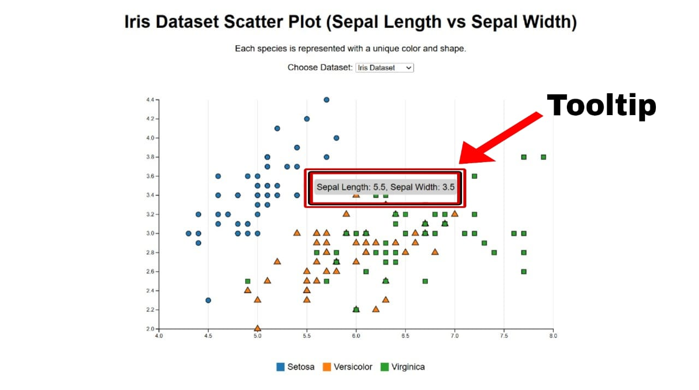
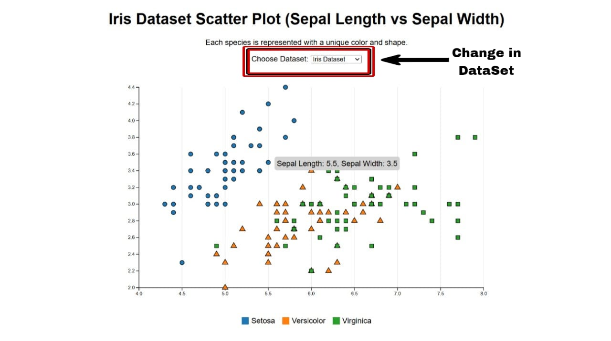
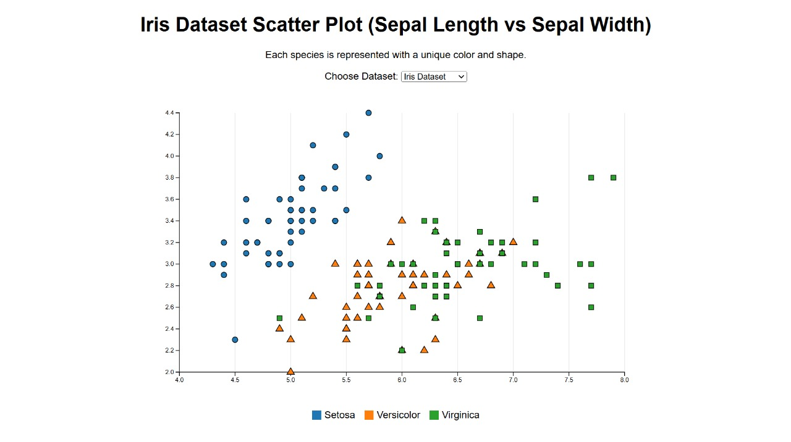
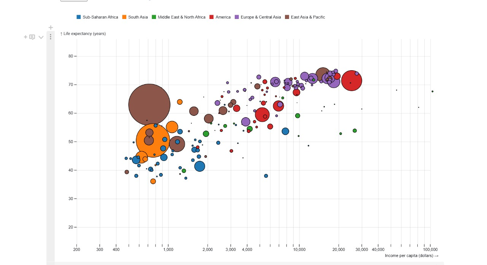
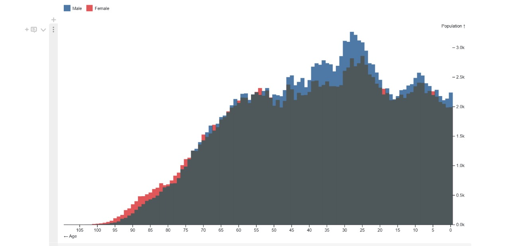

Overview
D3.js, short for Data-Driven Documents, is a powerful
JavaScript library used to create dynamic and interactive data
visualizations in web browsers.
D3.js helps turn raw data into interactive and visually appealing
charts, graphs, and maps. It allows developers to:
- Bind data to web elements.
- Create animations.
- Add interactive features like hovering and clicking.
- Customize visuals as per user needs.
It is widely used in fields like
finance, business intelligence, and data journalism
to present complex information in a simple and engaging way.
Installation & Setup
To use D3.js in a simple HTML file, include the D3.js library using:
<script src="https://d3js.org/d3.v7.min.js"></script>
This allows you to start creating visualizations directly in your web
page.
Key Features
Some key features of D3.js include:
-
Data Binding: D3.js binds data to HTML, SVG, and
Canvas elements dynamically.
-
Transitions & Animations: Smooth animations help in
better visualization.
-
Interactivity: Zooming, tooltips, and dropdowns
make data more engaging.
-
Scalability: Works efficiently with large datasets.
-
Customization: Allows complete control over visual
elements.
Zoom Feature
The zoom feature in D3.js enables users to explore
visualizations interactively by zooming in and out. It is implemented
using the D3 zoom behavior:
d3.zoom().scaleExtent([1, 10]).on("zoom", function(event) {
svg.attr("transform", event.transform);
});
Tooltip Feature

The tooltip feature displays additional data when the
user hovers over an element in the chart. Example implementation:
d3.select("svg").selectAll("circle")
.on("mouseover", function(event, d) {
tooltip.style("visibility", "visible")
.text("Value: " + d.value);
})
.on("mousemove", function(event) {
tooltip.style("top", (event.pageY - 10) + "px")
.style("left", (event.pageX + 10) + "px");
})
.on("mouseout", function() {
tooltip.style("visibility", "hidden");
});
Dropdown Feature

The dropdown feature allows users to switch between
different datasets dynamically:
d3.select("#datasetSelector").on("change", function() {
let selectedDataset = d3.select(this).property("value");
loadData(selectedDataset);
});
Code Examples
Here is a working D3.js scatter plot example using the Iris dataset:
code:
<!DOCTYPE html>
<html lang="en">
<head>
<meta charset="UTF-8">
<meta name="viewport" content="width=device-width, initial-scale=1.0">
<title>Iris Dataset Scatter Plot - D3.js</title>
<script src="https://d3js.org/d3.v7.min.js"></script>
<style>
body { font-family: Arial, sans-serif; text-align: center; }
.chart-container { display: flex; justify-content: center; margin-top: 20px; }
.tooltip { position: absolute; background: lightgray; padding: 5px; border-radius: 5px; visibility: hidden; }
</style>
</head>
<body>
<h1>Iris Dataset Scatter Plot</h1>
<label for="datasetSelector">Choose Dataset:</label>
<select id="datasetSelector">
<option value="iris.csv">Iris Dataset</option>
<option value="new_data.csv">Other Dataset</option>
</select>
<div class="chart-container">
<svg id="scatterplot"></svg>
</div>
<div class="tooltip"></div>
<script>
const width = 800, height = 500, margin = { top: 30, right: 30, bottom: 50, left: 50 };
const svg = d3.select("#scatterplot").attr("width", width).attr("height", height);
const tooltip = d3.select(".tooltip");
function loadData(file) {
d3.csv(file).then(data => {
data.forEach(d => {
d.sepalLength = +d["sepal.length"];
d.sepalWidth = +d["sepal.width"];
d.species = d.variety;
});
updateChart(data);
});
}
function updateChart(data) {
svg.selectAll("*").remove();
const x = d3.scaleLinear().domain(d3.extent(data, d => d.sepalLength)).nice().range([margin.left, width - margin.right]);
const y = d3.scaleLinear().domain(d3.extent(data, d => d.sepalWidth)).nice().range([height - margin.bottom, margin.top]);
svg.append("g")
.attr("transform", translate(0,${height - margin.bottom}))
.call(d3.axisBottom(x));
svg.append("g")
.attr("transform", translate(${margin.left},0))
.call(d3.axisLeft(y));
svg.append("g")
.selectAll("circle")
.data(data)
.join("circle")
.attr("cx", d => x(d.sepalLength))
.attr("cy", d => y(d.sepalWidth))
.attr("r", 5)
.attr("fill", "steelblue")
.on("mouseover", (event, d) => {
tooltip.style("visibility", "visible").text(Sepal Length: ${d.sepalLength}, Sepal Width: ${d.sepalWidth});
})
.on("mousemove", event => {
tooltip.style("top", (event.pageY - 10) + "px").style("left", (event.pageX + 10) + "px");
})
.on("mouseout", () => tooltip.style("visibility", "hidden"));
}
d3.select("#datasetSelector").on("change", function() {
loadData(d3.select(this).property("value"));
});
loadData("iris.csv");
</script>
</body>
</html>
Result:

Understanding the D3.js Code for the Iris Dataset Scatter Plot
The following explanation breaks down the key D3.js functionalities
used in the scatter plot visualization of the Iris dataset.
1. Setting Up the SVG Canvas
We define the dimensions of the scatter plot and select the SVG
element.
const width = 800, height = 500, margin = { top: 30, right: 30,
bottom: 50, left: 50 }; const svg =
d3.select("#scatterplot").attr("width", width).attr("height",
height);
2. Loading the CSV Dataset
D3.js loads the dataset asynchronously, processes it, and calls updateChart
function loadData(file) { d3.csv(file).then(data => { data.forEach(d
=> { d.sepalLength = +d["sepal.length"]; d.sepalWidth =
+d["sepal.width"]; d.species = d.variety; }); updateChart(data); });
}
3. Creating Scales
Linear scales map the dataset values to the visualization area.
const x = d3.scaleLinear() .domain(d3.extent(data, d =>
d.sepalLength)).nice() .range([margin.left, width - margin.right]);
const y = d3.scaleLinear() .domain(d3.extent(data, d =>
d.sepalWidth)).nice() .range([height - margin.bottom, margin.top]);
4. Adding Axes
Axes are appended to the SVG using D3.js functions.
svg.append("g") .attr("transform", `translate(0,${height -
margin.bottom})`) .call(d3.axisBottom(x)); svg.append("g")
.attr("transform", translate(${margin.left},0))
.call(d3.axisLeft(y));
5. Drawing Scatter Points
Data points are represented using different colors and shapes.
svg.append("g") .selectAll("circle") .data(data).join("circle")
.attr("cx", d => x(d.sepalLength))
.attr("cy", d => y(d.sepalWidth))
.attr("r", 5)
.attr("fill", "steelblue")
.on("mouseover", (event, d) => { tooltip.style("visibility",
"visible").text(Sepal Length: ${d.sepalLength}, Sepal Width: ${d.sepalWidth}); })
.on("mousemove", event => { tooltip.style("top", (event.pageY - 10) + "px")
.style("left", (event.pageX + 10) + "px"); })
.on("mouseout", () => tooltip.style("visibility", "hidden"));
6. Adding Tooltips
Tooltips display data values on hover.
.on("mouseover", (event, d) => { tooltip.style("visibility",
"visible").text(Sepal Length: ${d.sepalLength}, Sepal Width: ${d.sepalWidth}); })
.on("mousemove", event => { tooltip.style("top", (event.pageY - 10) + "px")
.style("left", (event.pageX + 10) + "px"); })
.on("mouseout", () => tooltip.style("visibility", "hidden"));
7. Creating a Legend
The legend allows users to filter species.
const legend = d3.select(".legend") .selectAll(".legend-item")
.data([...new Set(data.map(d => d.species))]) .join("div")
.attr("class", "legend-item") .on("click", species => {
svg.selectAll("circle") .transition().duration(500)
.style("opacity", d => d.species === species ? 1 : 0.2);
});
8. Implementing Zoom and Pan
Users can zoom and pan using D3.js zoom functions.
const zoom = d3.zoom() .scaleExtent([1, 10])
.translateExtent([[0, 0], [width, height]])
.on("zoom", event => { svg.selectAll("g").attr("transform", event.transform); });
svg.call(zoom);
9. Changing the Dataset
The dataset selector allows switching between different CSV files.
d3.select("#datasetSelector").on("change", function() {
loadData(d3.select(this).property("value"));
});
Additional Use Cases for D3.js
The Wealth & Health of Nations
Application: Economic and Health Data Visualization
Example: It plots per-capita income on the x-axis,
life expectancy on the y-axis, and population size using the area of
bubbles.

The Wealth & Health of Nations is a recreation of a Gapminder
visualization made famous by Hans Rosling. It shows per-capita
income (x), life expectancy (y) and population (area) of 180 nations
over the last 209 years, colored by region.
Population Studies
Application: Demographic Data Visualization
Example: Governments and researchers use D3.js to
analyze population growth, migration trends, and demographic changes
over time using interactive visualizations.
Data: Statistics Iceland via Borgar Þorsteinsson

Icelandic population by age, 1841 - 2019. Blue represents surplus
male population and red represents surplus female population.
Education and Learning Analytics
Application: Student Performance Tracking
Example: Universities and online learning platforms
use D3.js to visualize student progress, course completion rates, and
engagement metrics.
Supply Chain & Logistics
Application: Route Optimization and Shipment
Tracking
Example: Companies like FedEx and Amazon use D3.js
to visualize supply chain efficiency, track shipments, and optimize
delivery routes in real time.
Sports Analytics
Application: Player Performance & Match Statistics
Example: Sports websites and teams use D3.js to
analyze player performance, track game statistics, and visualize
trends such as shooting accuracy in basketball or passing patterns
in football.
Conclusion and Final Thoughts on D3.js
Overview
D3.js (Data-Driven Documents) is a powerful tool for creating interactive and beautiful data visualizations. It helps developers turn raw data into meaningful charts, graphs, and maps using SVG, HTML, and CSS. Unlike basic chart libraries, D3 gives full control over how data is displayed, making it highly customizable.
Why is D3.js Great?
- ✅ Customizable & Flexible: You can create unique and detailed visualizations.
- ✅ Works Well with Data: Easily connects with various data sources.
- ✅ Interactive & Engaging: Hover effects, zooming, animations, and tooltips make data more accessible.
- ✅ Handles Large Data Well: Efficiently works with datasets of any size.
- ✅ Widely Applicable: Used in finance, healthcare, education, and more.
Final Thoughts
D3.js isn’t just a library—it’s a gateway to storytelling with data. It transforms numbers and raw datasets into interactive visuals that engage users and provide deep insights. Although it has a learning curve, mastering D3 unlocks endless possibilities for data visualization.
References and Further Readings